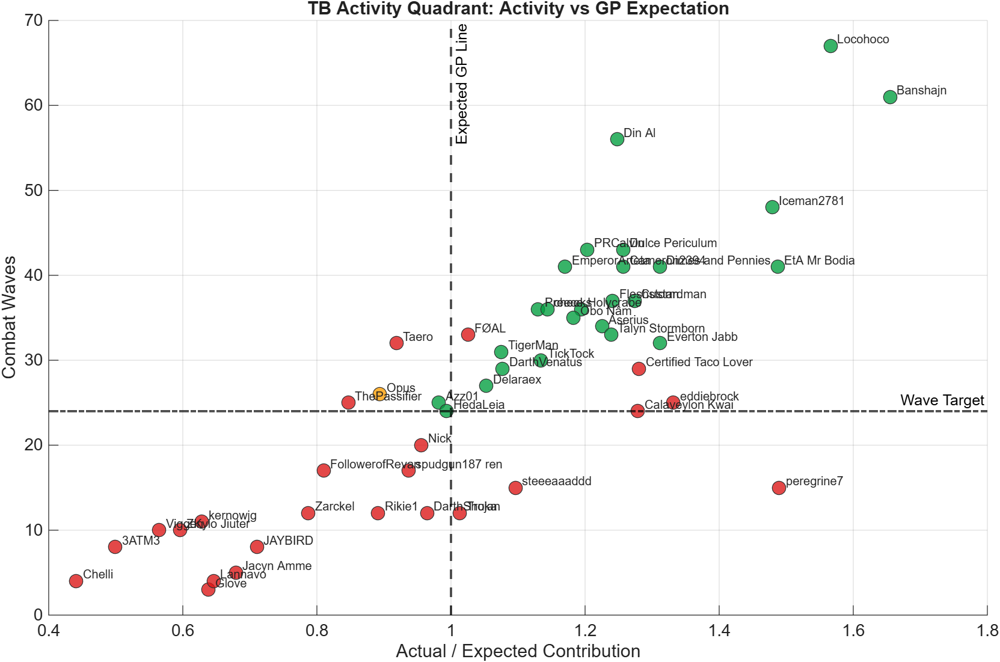
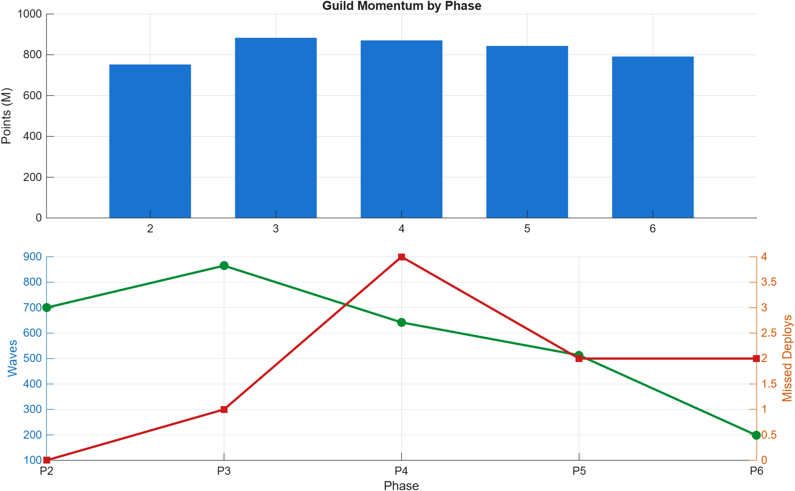
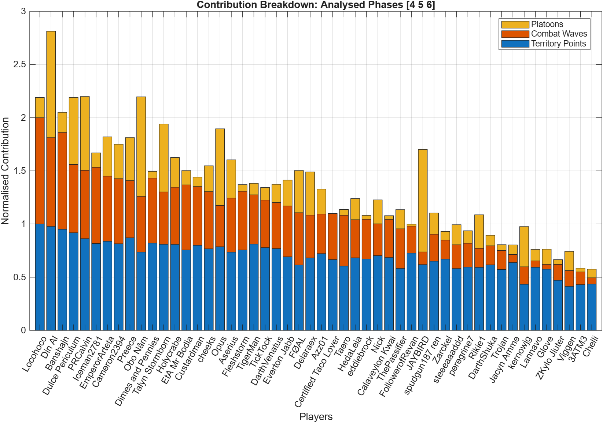
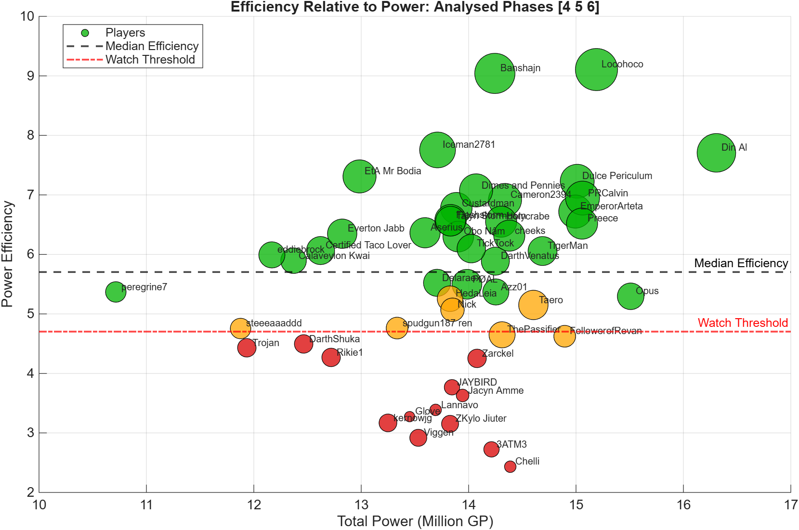

OANR Territory Battle
TB Report
Generated 2026-09-20 21:52. Analysed phases [4 5 6]. Detected phases [1 2 3 4 5 6].
phase activity: P4 Waves; P5 Waves; P6 WavesWave target: 24Platoon floor: 5
25Green
1Amber
24Red
Activity Quadrant

Best quick read: right side is above GP expectation, top side is activity.
Phase Momentum

Shows whether the guild is accelerating, fading, or missing deployment windows.
Contribution Breakdown

Shows each player contribution split between points, waves, and platoons.
Efficiency Bubble

Bubble size follows waves, colour follows efficiency band.
Activity Watchlist
| Name | RiskGroup | RiskReason | Priority | Missed | Waves | PlatoonUnits | RogueActions | ExpectedRatio |
|---|---|---|---|---|---|---|---|---|
| 3ATM3 | Red | missed deploy, low waves, low platoons | 6 | 1 | 8 | 4 | 0 | 0.499 |
| Chelli | Red | missed deploy, low waves | 5 | 1 | 4 | 9 | 1 | 0.441 |
| Viggen | Red | missed deploy, low waves | 5 | 1 | 10 | 20 | 0 | 0.565 |
| ZKylo Jiuter | Red | missed deploy, low waves | 5 | 1 | 10 | 5 | 0 | 0.596 |
| kernowjg | Red | missed deploy, low waves | 5 | 1 | 11 | 42 | 0 | 0.628 |
| FollowerofRevan | Red | low waves, low platoons | 3 | 0 | 17 | 2 | 1 | 0.810 |
| ThePassifier | Red | missed deploy | 3 | 1 | 25 | 20 | 0 | 0.847 |
| Taero | Red | missed deploy | 3 | 1 | 32 | 6 | 2 | 0.919 |
| FØAL | Red | missed deploy | 3 | 1 | 33 | 44 | 0 | 1.025 |
| Glove | Red | low waves | 2 | 0 | 3 | 16 | 1 | 0.638 |
| Lannavo | Red | low waves | 2 | 0 | 4 | 12 | 0 | 0.646 |
| Jacyn Amme | Red | low waves | 2 | 0 | 5 | 10 | 0 | 0.679 |
| JAYBIRD | Red | low waves | 2 | 0 | 8 | 107 | 0 | 0.710 |
| Zarckel | Red | low waves | 2 | 0 | 12 | 9 | 0 | 0.787 |
| Rikie1 | Red | low waves | 2 | 0 | 12 | 35 | 0 | 0.891 |
| spudgun187 ren | Red | low waves | 2 | 0 | 17 | 22 | 1 | 0.937 |
Top Contributors
| Name | RiskGroup | Score | Points | Waves | PlatoonUnits | RogueActions |
|---|---|---|---|---|---|---|
| Locohoco | Green | 0.919 | 71353636 | 67 | 21 | 0 |
| Din Al | Green | 0.916 | 69735552 | 56 | 111 | 0 |
| Banshajn | Green | 0.857 | 67857563 | 61 | 21 | 1 |
| Dulce Periculum | Green | 0.765 | 65531269 | 43 | 70 | 0 |
| PRCalvin | Green | 0.747 | 61598783 | 43 | 77 | 0 |
| Iceman2781 | Green | 0.704 | 58328954 | 48 | 15 | 0 |
| EmperorArteta | Green | 0.689 | 59803146 | 41 | 41 | 0 |
| Cameron2394 | Green | 0.675 | 58152690 | 41 | 36 | 0 |
| Preece | Green | 0.674 | 62144784 | 36 | 45 | 0 |
| Obo Nâm | Green | 0.661 | 52603003 | 35 | 104 | 0 |
Phase Summary
| Phase | Points M | Waves | Avg Waves | DeployedPlayers | Missed | Deployed GP |
|---|---|---|---|---|---|---|
| 4 | 870.713 | 642 | 12.840 | 46 | 4 | 638405363 |
| 5 | 843.584 | 513 | 10.260 | 48 | 2 | 662110644 |
| 6 | 791.534 | 198 | 3.960 | 48 | 2 | 664261536 |
Generated Files
- TB_Player_Summary.csv
- TB_Follow_Up_List.csv
- TB_Phase_Summary.csv
- TB_Report.txt
- PNG chart pack